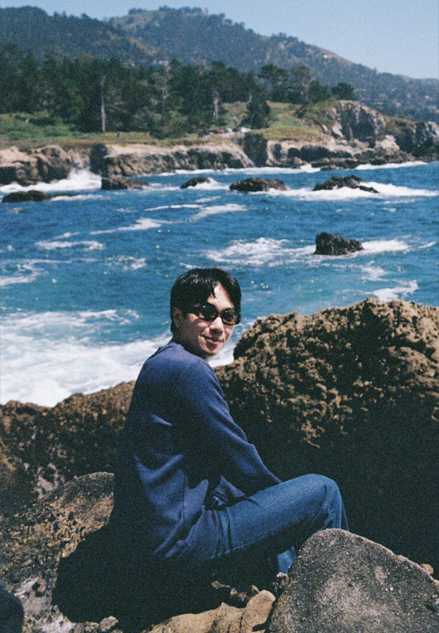

Hi, my name is Jacob, and I am a first-year CS PhD student at Stony Brook University advised by Tuhin Chakrabarty. I previously graduated from the Viterbi School of Engineering at USC with my MSCS, where I worked with Sai Praneeth Karimireddy and collaborated with Robin Jia. During my undergrad, I was advised by Dr. Jinho Choi at Emory NLP, and I also spent time auditing Carl Yang's lab with additional guidance from Jiaying Lu.
Research Interests
I am broadly interested in developing trustworthy AI through a data-centric lens, where I've explored adversarial attacks, biases, and privacy. I am currently studying how people value human- and AI-made work.
News
- Jul 2026ContextLeak has been accepted to COLM 2026. Excited for SF!
- Apr 2026I've committed to starting my CS PhD in Fall 2026 at Stony Brook. Go seawolves! 🐺
- Dec 2025Also check out our ContextLeak preprint!
- Jun 2025Our two workshop papers, "Auditing Privacy-Preserving In-Context Learning Methods" was accepted at L2M2 Workshop @ ACL, and "ContextLeak: Auditing Leakage in Private In-Context Learning Methods" was published at MemFM Workshop @ ICML!
- Sep 2024Our paper, "What is Your Favorite Gender, MLM? Gender Bias Evaluation in Multilingual Masked Language Models", was published at Information!
- Aug 2024Started my MSCS at USC ✌️
- May 2024I graduated from Emory College of Arts and Science with a B.S. in Computer Science with Highest Honors and with a minor in German studies 🦅
- Aug 2023Completed my REU at University of Colorado, Colorado Springs with Jugal Kalita.
Publications
-
ContextLeak: Auditing Leakage in Private In-Context Learning MethodsCOLM 2026; MemFM Workshop @ ICML 2025
-
Auditing Privacy-Preserving In-Context Learning MethodsL2M2 Workshop @ ACL 2025
-
What is Your Favorite Gender, MLM? Gender Bias Evaluation in Multilingual Masked Language ModelsInformation, 2024
* equal contribution
Miscellaneous
Outside of research, I enjoy grabbing food with friends, running (very slowly), and occasionally bouldering. I previously (many years ago) competed in Abacus, Flash Mental Math, and Dictation, as well as Chinese Brush Painting (All-American Chinese Brush Painting and Calligraphy Competition: Honor in 2014 and 2017; Finalist in 2016).
During my undergrad, I served as treasurer and wrote for Emory In Via's Journal of Christian Thought (Augustine Collective). Here are some of my pieces: a poem and a personal essay.